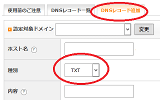
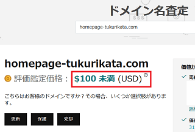

独自ドメインの売却方法
独自ドメインを売却する際、以下の事業者がおすすめです。
世界中のユーザーが利用しているオークションサイトの場合、高めの価格でも入札が入りやすくなるため、ユーザー数の多い場所で出品するのがよいでしょう。
■GoDaddy
GoDaddyの公式ページには「世界中で2,000万を超える顧客を抱え」とあり、ユーザー数が多いため、優良なドメイン名なら何かしらのオファーはあるはずです。当サイト運営者も利用していますが、GoDaddyでは気持ち高めに設定しておいても落札されやすいと感じています。
また、日本語にも対応しているため使いやすいです。
■Sedo
Sedoも有名ですが、こちらは日本語には対応していないため、多少の英語力が必要になるかもしれません。DN JournalのDomain Sales Reportによりますと、Sedoの売買実績は数多くあるので英語力のある方はトライされてみるのもよいと思います。
■お名前.com
日本の場合、お名前.comのドメイン売買サービスがおすすめです。ただし、こちらはお名前.comで管理している必要があるため、移管してから出品されることをおすすめします。
■バリュードメイン
バリュードメインで管理している場合はオークション（ベータ版）で出品することができます。こちらは売却代金をポイントでもらう形になりますが、必要のないドメインを処分するには使いやすいと思います。
即決価格、オファー、オークションの違い
どの事業者でも、出品する際にはおおむね以下の３つのオプションが用意されています。
■即決価格（※Buy Now、Buy It Now、BINなど）
・売却する価格を指定して出品し、その価格での入札があれば即時に売買が成立します。
■オファー
・ドメインに興味のある買い手からオファーをもらい、その価格で承諾するか、拒否するかを決めることができます。買い手からのオファーに対し、こちらからカウンターオファーを出すこともできます。
■オークション
・最低落札価格を決めてオークションで出品しますが、注目が集まれば、高騰する可能性があるかもしれません。ドメインを趣味で楽しむ場合はオークション形式で出品するのもよいでしょう。
ほかにも、即決価格を設定した状態でのオファーや、オファーを受けてからのオークション移行などの組み合わせもあります。
「即決価格」で出品する際の注意点
注意したい点は、複数のオークションサイトにて「即決価格」で出品していた場合、両方で同時に落札された場合などは落札者にドメインを引き渡せなくなり、トラブルに発展する可能性もあります。
また、うっかりドメインが期限切れになってしまったものの、自動での再出品設定のままで落札されてしまった場合、ドメインを用意できなくなりトラブルになる可能性もあります。ドメインを出品する際には「ドメインの有効期限」と「オークション出品の有効期限」とを確認し、保有していないにも関わらず、出品している状態にならないように注意しましょう。
できるだけ、「オファー」を受けたのち、それを受け入れるか、拒否するかを選択できる形で出品した方が安全かと思います。また、オファーを承諾する場合には、他のオークションサイトでの出品を取り消してからにするとよいでしょう。
加えて、移管したてのドメインの場合、再度、移管するまでには60日のしばりがあるため、落札された際の譲渡が確実に可能かどうかを確認することをおすすめします。
GoDaddyやSedoでのドメイン出品方法
ドメインを出品して落札された場合、買い手へ移管して譲渡する必要があるため、まずは出品するドメインが移管が可能な状態かどうかを確認しておきましょう。
■移管可能かを確認
一般的には、新規取得や前回の移管手続きから60日以内の場合、再度の移管手続きができないため、落札されたとしてもドメインの引き渡しができなくなる可能性があります。
また、当サイト運営者はいつも有効期限ギリギリで移管してますが、事業者によってはドメインの有効期限から30日以内、あるいは更新日から30日以内は移管できないケースもあるため、時間をおいてから出品するとよいでしょう。
■DNS編集の可否
出品する際はドメイン所有者の確認で「TXTレコード」を設定する必要があるため、現在のレジストラやレンタルサーバーでDNSの編集ができる必要があります。
例えば、FC2で管理しているドメインのネームサーバーをエックスサーバーに設定し、エックスサーバー側でDNS編集をして「TXTレコード」を追加するといった形になります。

この場合、エックスサーバーで簡易サイトを表示させつつ、GoDaddyやSedoで出品し、落札されたらFC2ドメインの管理画面でauthコードを取得して買い手に渡し、買い手のレジストラへと移管する形になります。
あるいは、お名前.comで管理しているドメインの場合、「DNS設定/転送設定－ドメイン一覧」の箇所からドメインを選択してページ下部の「次へ」をクリックし、「DNSレコード設定を利用する」の箇所から編集できます。
この場合、ネームサーバーもお名前.comに変更する必要がありますが、Aレコードも追加してサーバーのIPアドレスを直接指定すれば、たいていはサイトも表示されるはずです。
サイトを表示させない場合はTXTレコードを追加するだけでも問題ないですが、表示したまま出品する場合は、エックスサーバーやバリュードメインの無料ネームサーバーなどを利用すると使いやすいです。
■代金の受け取り方法
売却代金を受け取る方法としては、PayPalで銀行口座を登録して収益を受け取る形になるかと思います。当サイト運営者の場合、ドルでの入金があった日付のTTMレートで売上に計上し、日本円で引き出した際には差額を為替差損で調整していますが、税務処理上、これが正しいのかは分かりません。
出品価格の決め方
実際に出品されているドメインを確認し、どの程度の価格で落札されているのかを確認しておきましょう。GoDaddyにはドメインの査定ツールなどもありますが、似たようなドメインでの過去の売買履歴は多少は参考になるかもしれません。
例えば、当サイトのドメインは100ドル未満との表示がされましたが、ハイフン付きで文字数が多いドメイン名の場合、数百円でも売れない印象を感じています。

おおむね、ハイフン付きで15文字以上の場合は、残念なドメイン名になってしまうかもしれません。
また、キーワードで検索してみて、似たようなドメイン名はどの程度の価格で出品されているのかも確認してみるとよいでしょう。
一般的には、netよりもcomの人気が高いため、同じ文字列でcomが空いている場合は買い手が付かないかもしれません。一方、同じ文字列でnetやorgでの高額な売買履歴がある場合、comドメインについてはそれ以上の価格で売れる可能性があります。
４文字でもnetなら数千円でも買えますが、comの場合はまず買えないなど、ドメインの種類によっても違いが出てきます。
また、オークション中のものはほぼ期限切れドメインのバックオーダーかと思いますが、そちらは４文字などのレアなドメイン名も多く、注目度が高いです。
一方、既に運営しているドメインを出品する場合はあまり注目されないかもしれませんが、運営年数や被リンク数など、SEO効果を求める人からは種類に関わらず一定の需要があります。ドメインをチェックするツールなどにデータが反映されるまでは時間がかかるため、気長に待つことをおすすめします。
落札後のドメイン移管と入金までの流れ
ドメインが落札された後に運営側からメールが来るので、その通りに対応していけば問題ありません。
GodaddyもSedoも、まずは買い手から運営側へ落札代金が支払われて資金が担保されます。その後、ドメインの移管をして譲渡が完了すれば、運営側の手数料を引かれた代金が売り手へと支払われます。売り手と買い手との間で直接やり取りをする必要はなく、ドメインのロックを解除してauthコードを渡すだけです。
こちらはGoDaddyでの取引履歴ですが、落札から着金までおおむね１週間ぐらいかかるかもしれません。
■GoDaddy
ドメインの落札から移管の完了まで１時間程度で完了することもありますが、ドメインの事業者によっては、メールでの承認後、２週間程度放置しないと移管してくれないケースもあります。
また、移管したての場合、一般的には60日以内の場合は再度の移管ができないため、そのような場合はある程度の時間がかかるかもしれません。
Sedoも1週間ぐらいかと思います。
■Sedo
移管に時間がかかる程度なら特に問題ないとは思いますが、更新期限が切れていてドメインが自分の手を離れてしまった場合、落札されたドメインを引き渡すことができず、買い手との間で紛争になる可能性もあります。
出品したドメインの更新期限についてはよく確認しておくことをおすすめします。